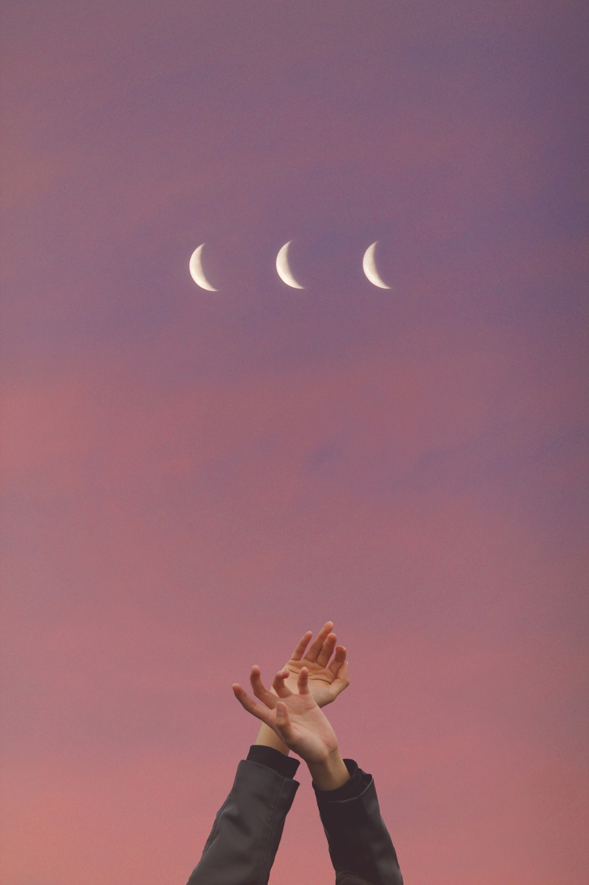
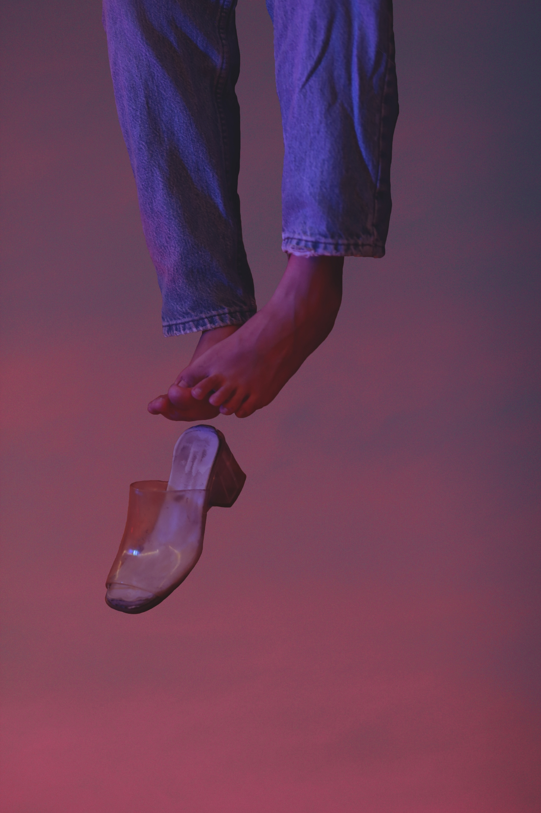
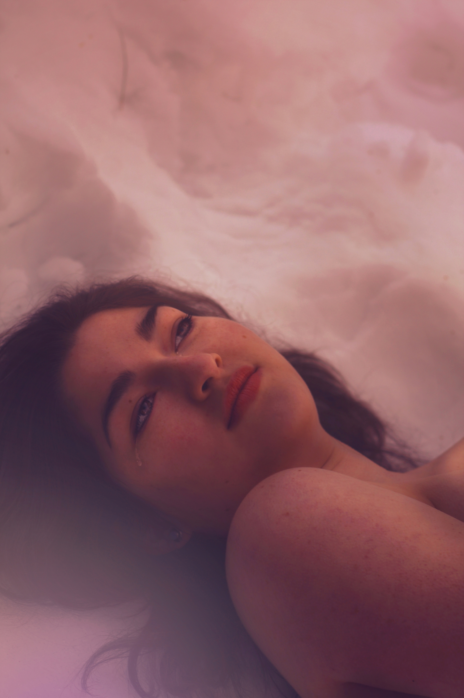

You treat them like they have a heart like yours, but not everyone can be as soft and as tender

you don't see the person they are you see the person they have the potential to be


you give and give until they pull everuthing out of you and leave you empty
with muscles like Botticelli, I will remember forever